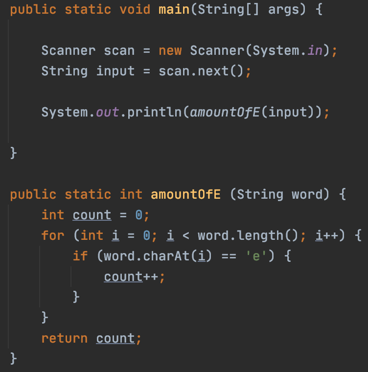

| Java | Explanation |
|---|---|
|  |
When you get into more advanced Java, you might want to create your own function. There are many built-in functions in Java, such as .contains and .length. However, if your program requires you to reuse the same block of code over and over again, instead of making your code longer by copying over the code each time, you can create a function. You can apply this function throughout your code. On the left we see an example of a function. First, we use Scanner to take input from the user. This input is stored in scan and goes to another variable, input as a String. Now, our function. Our function is designed to count the amount of the letter “e” in our input. To set up a function, we start out with public static. Then, we add the type of data we want as the output. In this case, we want a count, so we write public static int. Following this is our function name, countOfE. Finally, in parenthesis, we put the input we are taking into the function. In this case, we are taking one String, and we can name it anything, such as word. We use this variable name inside function code. Inside the function is the code we would like to use in the function. We use an if statement inside a for loop to count the amount of e’s. Finally, we must return a value. This will output the final value in our main code. We go back to the main code and see we are printing our input inside our written function. This will return a number, the amount of e’s in the given user input. |